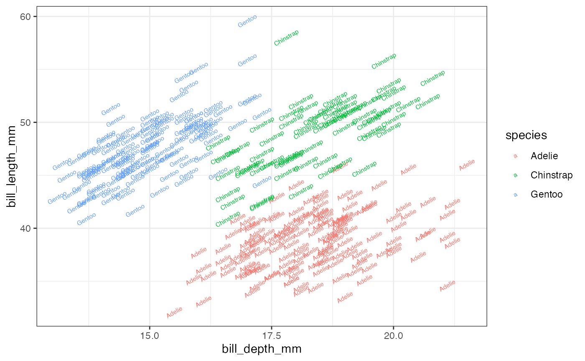

Text geoms are useful for labeling plots. They can be used by themselves as
scatterplots or in combination with other geoms, for example, for labeling
points or for annotating the height of bars. geom_text() adds only text
to the plot. geom_label() draws a rectangle behind the text, making it
easier to read.
Usage
gf_text(
object = NULL,
gformula = NULL,
data = NULL,
...,
label,
alpha,
angle,
color,
family,
fontface,
group,
hjust,
lineheight,
size,
vjust,
parse = FALSE,
nudge_x = 0,
nudge_y = 0,
check_overlap = FALSE,
xlab,
ylab,
title,
subtitle,
caption,
geom = "text",
stat = "identity",
position = "nudge",
show.legend = NA,
show.help = NULL,
inherit = TRUE,
environment = parent.frame()
)
gf_label(
object = NULL,
gformula = NULL,
data = NULL,
...,
label,
alpha,
angle,
color,
family,
fontface,
group,
hjust,
vjust,
size,
parse,
nudge_x = 0,
nudge_y = 0,
label.padding = unit(0.25, "lines"),
label.r = unit(0.15, "lines"),
xlab,
ylab,
title,
subtitle,
caption,
stat = "identity",
position = "nudge",
show.legend = NA,
show.help = NULL,
inherit = TRUE,
environment = parent.frame()
)Arguments
- object
When chaining, this holds an object produced in the earlier portions of the chain. Most users can safely ignore this argument. See details and examples.
- gformula
A formula with shape
y ~ x. Faceting can be achieved by including|in the formula.- data
The data to be displayed in this layer. There are three options:
If
NULL, the default, the data is inherited from the plot data as specified in the call toggplot().A
data.frame, or other object, will override the plot data. All objects will be fortified to produce a data frame. Seefortify()for which variables will be created.A
functionwill be called with a single argument, the plot data. The return value must be adata.frame, and will be used as the layer data. Afunctioncan be created from aformula(e.g.~ head(.x, 10)).- ...
Additional arguments. Typically these are (a) ggplot2 aesthetics to be set with
attribute = value, (b) ggplot2 aesthetics to be mapped withattribute = ~ expression, or (c) attributes of the layer as a whole, which are set withattribute = value.- label
The text to be displayed.
- alpha
Opacity (0 = invisible, 1 = opaque).
- angle
An angle for rotating the text.
- color
A color or a formula used for mapping color.
- family
A font family.
- fontface
One of
"plain","bold","italic", or"bold italic".- group
Used for grouping.
- hjust, vjust
Numbers between 0 and 1 indicating how to justify text relative the the specified location.
- lineheight
Line height.
- size
A numeric size or a formula used for mapping size.
- parse
If
TRUE, the labels will be parsed into expressions and displayed as described in?plotmath.- nudge_x, nudge_y
Passed to
ggplot2::position_nudge()to nudge text or labels horizontally or vertically.- check_overlap
If
TRUE, text that overlaps previous text in the same layer will not be plotted.check_overlaphappens at draw time and in the order of the data. Therefore data should be arranged by the label column before callinggeom_text(). Note that this argument is not supported bygeom_label().- xlab
Label for x-axis. See also
gf_labs().- ylab
Label for y-axis. See also
gf_labs().- title, subtitle, caption
Title, sub-title, and caption for the plot. See also
gf_labs().- geom
A character string naming the geom used to make the layer.
- stat
The statistical transformation to use on the data for this layer. When using a
geom_*()function to construct a layer, thestatargument can be used to override the default coupling between geoms and stats. Thestatargument accepts the following:A
Statggproto subclass, for exampleStatCount.A string naming the stat. To give the stat as a string, strip the function name of the
stat_prefix. For example, to usestat_count(), give the stat as"count".For more information and other ways to specify the stat, see the layer stat documentation.
- position
A position adjustment to use on the data for this layer. This can be used in various ways, including to prevent overplotting and improving the display. The
positionargument accepts the following:The result of calling a position function, such as
position_jitter(). This method allows for passing extra arguments to the position.A string naming the position adjustment. To give the position as a string, strip the function name of the
position_prefix. For example, to useposition_jitter(), give the position as"jitter".For more information and other ways to specify the position, see the layer position documentation.
- show.legend
logical. Should this layer be included in the legends?
NA, the default, includes if any aesthetics are mapped.FALSEnever includes, andTRUEalways includes. It can also be a named logical vector to finely select the aesthetics to display. To include legend keys for all levels, even when no data exists, useTRUE. IfNA, all levels are shown in legend, but unobserved levels are omitted.- show.help
If
TRUE, display some minimal help.- inherit
A logical indicating whether default attributes are inherited.
- environment
An environment in which to look for variables not found in
data.- label.padding
Amount of padding around label. Defaults to 0.25 lines.
- label.r
Radius of rounded corners. Defaults to 0.15 lines.
Specifying plot attributes
Positional attributes (a.k.a, aesthetics) are specified using the formula in gformula.
Setting and mapping of additional attributes can be done through the
use of additional arguments.
Attributes can be set can be set using arguments of the form attribute = value or
mapped using arguments of the form attribute = ~ expression.
In formulas of the form A | B, B will be used to form facets using
ggplot2::facet_wrap() or ggplot2::facet_grid().
This provides an alternative to
gf_facet_wrap() and
gf_facet_grid() that is terser and may feel more familiar to users
of lattice.
Evaluation
Evaluation of the ggplot2 code occurs in the environment of gformula.
This will typically do the right thing when formulas are created on the fly, but might not
be the right thing if formulas created in one environment are used to create plots
in another.
Examples
data(penguins, package = "palmerpenguins")
gf_text(bill_length_mm ~ bill_depth_mm,
data = penguins,
label = ~species, color = ~species, size = 2, angle = 30
)
#> Warning: Removed 2 rows containing missing values or values outside the scale range
#> (`geom_text()`).

penguins |>
gf_point(bill_length_mm ~ bill_depth_mm, color = ~species, alpha = 0.5) |>
gf_text(bill_length_mm ~ bill_depth_mm,
label = ~species, color = ~species,
size = 2, angle = 0, hjust = 0, nudge_x = 0.1, nudge_y = 0.1
)
#> Warning: Removed 2 rows containing missing values or values outside the scale range
#> (`geom_point()`).
#> Warning: Removed 2 rows containing missing values or values outside the scale range
#> (`geom_text()`).
if (require(dplyr)) {
data(penguins, package = "palmerpenguins")
penguins_means <-
penguins |>
group_by(species) |>
summarise(bill_length_mm = mean(bill_length_mm), bill_depth_mm = mean(bill_depth_mm))
gf_point(bill_length_mm ~ bill_depth_mm, data = penguins, color = ~species) |>
gf_label(bill_length_mm ~ bill_depth_mm,
data = penguins_means,
label = ~species, color = ~species, size = 2, alpha = 0.7
)
}
#> Warning: Removed 2 rows containing missing values or values outside the scale range
#> (`geom_point()`).
#> Warning: Removed 2 rows containing missing values or values outside the scale range
#> (`geom_label()`).